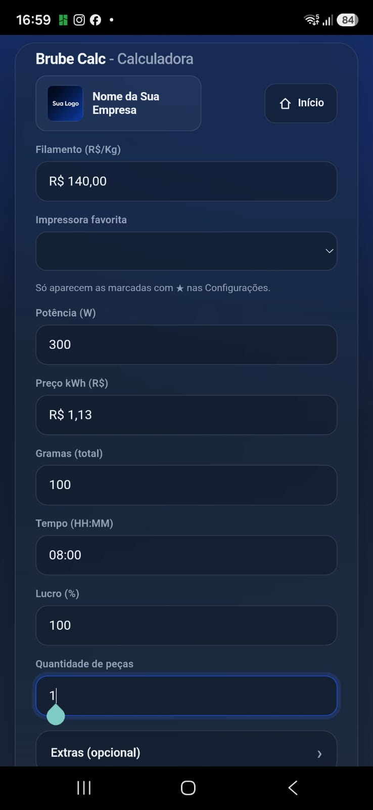
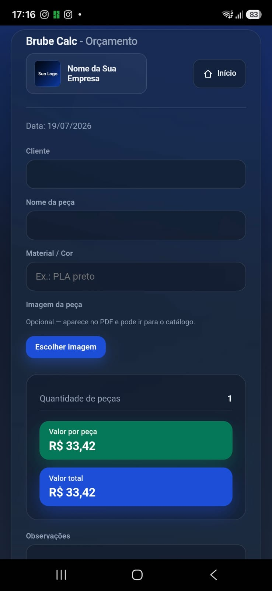
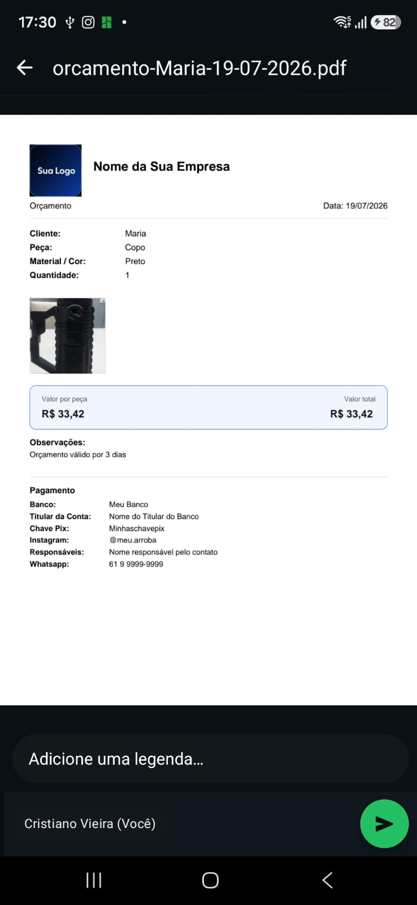

Cálculo e orçamento
Preencha o cálculo, gere o orçamento com foto (opcional), envie o PDF e, se quiser, salve a peça no catálogo.
Na tela inicial, toque em Calculadora.
Informe filamento (R$/Kg), impressora favorita (as marcadas com ★ nas Configurações), potência, preço do kWh, gramas, tempo (HH:MM), lucro (%) e quantidade de peças.

Em Extras você pode somar desgaste, taxa de falha, mão de obra e embalagem. Deixe zero se não quiser afetar o cálculo.
Toque em Calcular para ver os custos. Depois use Gerar Orçamento para montar o PDF.
Aparecem filamento, energia, extras, lucro, custo total e custo por peça. Em destaque ficam o valor por peça e a venda total.
Após Gerar Orçamento, preencha cliente, nome da peça e material/cor. Os valores já vêm do cálculo.
Em Imagem da peça, toque em Adicionar imagem e escolha Galeria ou Câmera.

Exemplo: cliente, nome da peça e cor preenchidos. A foto é opcional, mas deixa o PDF e o catálogo mais claros.
Depois de escolher a imagem, abre Ajustar foto: arraste para enquadrar, use o zoom e toque em Aplicar corte. Se preferir a foto sem cortar, use Usar inteira.
Marque Adicionar este item ao catálogo se quiser guardar a peça (nome, peso, tempo, custo, venda e imagem) para reutilizar depois.
Você pode tocar em Adicionar ao catálogo agora, ou gerar o PDF com a opção marcada — o item também é salvo.
Em seguida toque em Salvar / Compartilhar PDF.
O PDF traz logo, empresa, cliente, peça, material, quantidade, foto (se houver), valores, observações e dados de pagamento. No celular você pode enviar por WhatsApp, Drive etc.

Se marcou adicionar ao catálogo, a peça aparece em Catálogo com foto, peso, tempo e preço — pronta para gerar novos orçamentos depois.